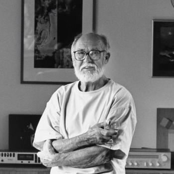
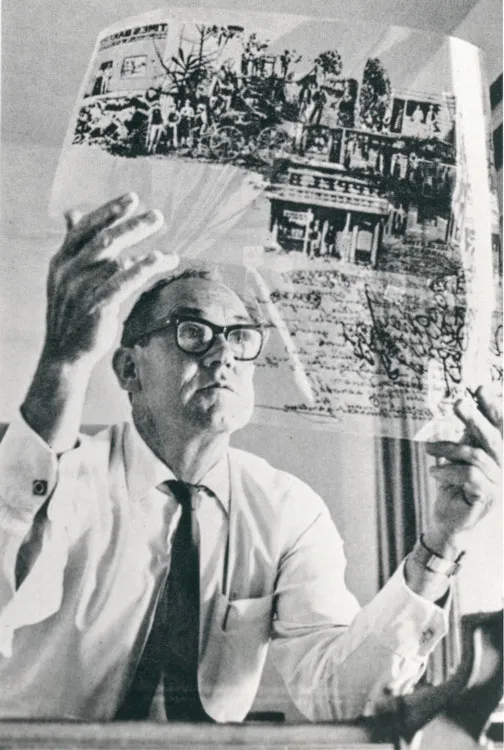

About
Gordon Andrews

Gordon Andrews. (b.1914) Born in Ashfield, NSW, this designer’s career has embraced industrial design (cookware, furniture), graphic design, development of exhibition concepts and design as well as photography. He trained at the Sydney Technical College, Ultimo and the East Sydney Technical College but gained his formative experience in graphic design with the advertising agencies Samson Clark Price Berry, Sydney and Stuart, London in the 1930s. He returned to Sydney in 1939 and briefly ran a personal design practice. During the 1939-45 war, he worked in the De Havilland drawing office and later supervised an experimental hangar.
In 1946, he held a one-man show of paintings and ‘constructions’, including contemporary furniture, with some models later copied by others. In 1949, he took his family to London and set up his own design office, which was retained by the Design Research Unit to design exhibitions for Ilford, Peter Robinsons, The Tea Board, the British Council. He also worked on exhibitions and showrooms for Olivetti, and Smiths Instruments. In 1951, he was made Fellow of the Society of Industrial Designers.
During 1953-1954, he and his family lived in Turin, Italy, while he designed an encyclopaedia, styled a fountain pen and produced an exhibition for the 1954 Fiera de Milano. Then he turned down a three-year contract with Olivetti to bring his family back to Sydney. On return, he designed exhibitions, shops, showrooms and furniture for Olivetti, David Jones the Commonwealth Bank, NSW Government agencies, and other notable clients.
He is best known for designing the first decimal currency bank notes that were released in Australia on 14 February 1966. Working with Hal Missingham, Douglas Annand and Alistair Morrison as advisers, Gordon Andrews designed for the Reserve Bank of Australia its first $1, $2, $5, $10, $20 and $50 paper notes. These designs won almost universal appreciation.

Influence and Contemporaries
Andrews was part of a dynamic generation of Australian designers who sought to modernise the country's design identity. His contemporaries included Grant Featherston, known for his innovative furniture designs, and Douglas Annand, a celebrated graphic designer. Together, these designers helped to shape the visual language of mid-century Australia, bringing international influences into a uniquely Australian context
His work also intersected with the broader architectural and design movements of his time. He collaborated with architects and urban planners, contributing to projects that reflected the increasing modernisation of Australian cities. Andrews was deeply involved in discussions about national identity in design, advocating for an approach that balanced global trends with distinctly Australian elements.
Legacy
Gordon Andrews left an enduring impact on Australian design. His work remains a reference point for contemporary designers, particularly in the fields of currency design and industrial design. The National Gallery of Australia and other institutions hold collections of his work, preserving his contributions for future generations.
Andrews' ability to blend artistic vision with practical application set a precedent for Australian designers to follow. His dedication to craftsmanship, innovation, and national identity in design ensures that his legacy continues to inspire and inform Australian visual culture today.
Reference